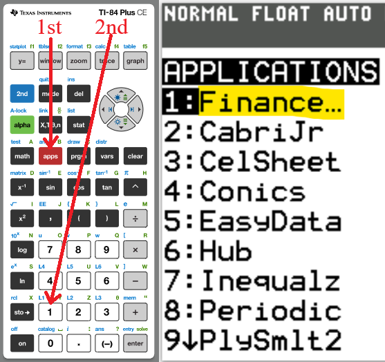
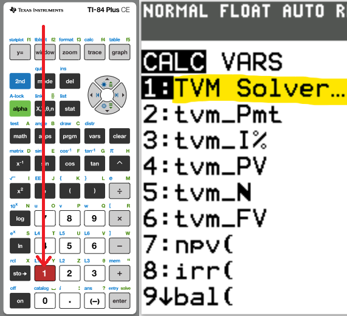
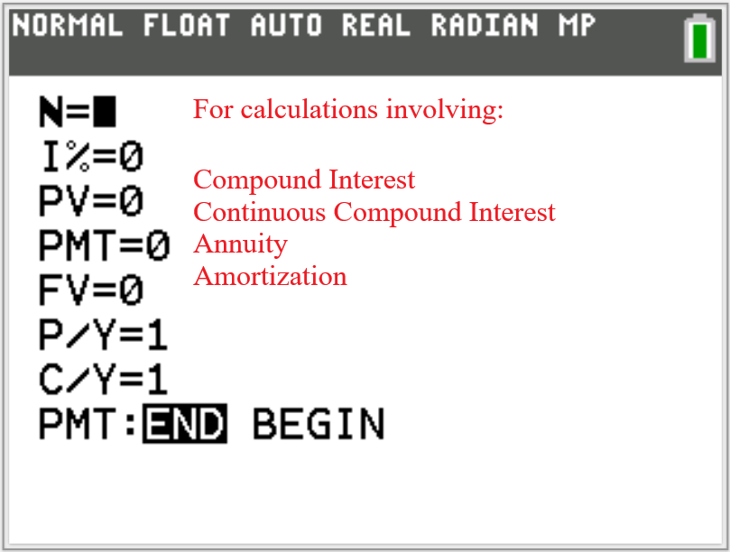
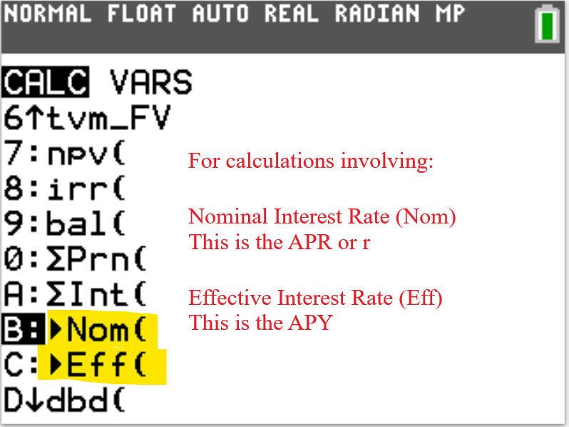

I greet you this day,
My name is Samuel Dominic Chukwuemeka (also known as SamDom For Peace).
I appreciate your attendance to this session.
If you do not mind, may we please take little time to introduce one another?
Name:
School/College/University:
Courses you teach:
Single Three-Year Software License Request Form
You may request for a complimentary three-year software license by completing the form at: https://ti-enews-education.ti.com/syllabus
You may use any of these TI calculators:
TI-83 Plus
TI-84 Plus series
TI-Nspire CX series
TI-89 Titanium
TI-73 Explorer
There are at least two approaches to using the TI-calculators for finance problems.
1st Approach: Direct Input of Substituted Values
(1.) Find the applicable
Formula
(2.) Substitute the values directly in the formula.
(3.) Enter it directly in the calculator.
(Please see Show/Hide Answer for examples.)
2nd Approach: Time Value of Money (TVM) Solver
The Finance app is required.
It can be assessed by pressing the APPS button, then pressing the 1: Finance app
We begin with the TVM Solver (known as the Time Value of Money Solver) which is found as the first app
under the CALC menu (CALC → 1: TVM Solver ...)



Nom(APY, m) Eff(APR, m)

The Mathematics of Finance is designed to:
(1.) Meet one of the learning objectives of the VCCS (Virginia Community College System) standards for:
MTH 130:
Fundamentals of Reasoning
(Presents elementary concepts of algebra, linear graphing, financial literacy, descriptive
statistics, and measurement & geometry. ).
MTH 154:
Quantitative Reasoning
(Presents topics in proportional reasoning, modeling, financial literacy and validity studies (logic
and set theory).).
MTH
165: Finite Math
(Presents topics in systems of equations, matrices, linear programming, mathematics of finance,
counting theory, probability, and Markov Chains.).
(2.) Meet the QM (Quality Matters) and USDOE (United States Department of Education) requirements for
distance education as regards the provision of RSI (Regular and Substantive Interaction).
Federal Register: Distance Education and Innovation
St. John's University: New Federal Requirements for Distance Education: Regular and
Substantive Interaction (RSI)
Student – Content Interaction: Very high
Student – Student Interaction: High
Student – Faculty Interaction: High
(3.) Solve finance problems using technology: Texas Instruments (TI) calculators.
(4.) Solve finance problems using spreadsheets: Microsoft Excel and/or Google spreadsheets.
Skills Measured/Acquired
(1.) Use of prior knowledge
(2.) Critical Thinking
(3.) Interdisciplinary connections/applications
(4.) Technology
(5.) Active participation through direct questioning
(6.) Research
$ (1.)\:\: SI = Prt \\[3ex] (2.)\:\: SI = A - P \\[3ex] (3.)\:\: P = \dfrac{SI}{rt} \\[5ex] (4.)\:\: t = \dfrac{SI}{Pr} \\[5ex] (5.)\:\: r = \dfrac{SI}{Pt} \\[5ex] (6.)\:\: A = P + SI \\[3ex] (7.)\:\: A = P(1 + rt) \\[3ex] (8.)\:\: P = \dfrac{A}{1 + rt} \\[5ex] (9.)\:\: t = \dfrac{A - P}{Pr} \\[5ex] (10.)\:\: r = \dfrac{A - P}{Pt} \\[5ex] (11.)\:\: SI = \dfrac{Art}{1 + rt} $
$ (1.)\:\: A = P\left(1 + \dfrac{r}{m}\right)^{mt} \\[7ex] (2.)\:\: P = \dfrac{A}{\left(1 + \dfrac{r}{m}\right)^{mt}} \\[10ex] (3.)\:\: r = m\left[\left(\dfrac{A}{P}\right)^{\dfrac{1}{mt}} - 1\right] \\[10ex] (4.)\:\: r = m\left(10^{\dfrac{\log\left(\dfrac{A}{P}\right)}{mt}} - 1\right) \\[10ex] (5.)\:\: t = \dfrac{\log\left(\dfrac{A}{P}\right)}{m\log\left(1 + \dfrac{r}{m}\right)} \\[7ex] (6.)\:\: A = P + CI \\[3ex] (7.)\:\: CI = A - P $
Values of m
| If Compounded: | m = |
|---|---|
| Annually |
1 (1 time per year) Also means every twelve months |
| Semiannually |
2 (2 times per year) Also means every six months |
| Quarterly |
4 (4 times per year) Also means every three months |
| Monthly |
12 (12 times per year) Also means every month |
| Weekly | 52 (52 times per year) |
| Daily (Ordinary/Banker's Rule) | 360 (360 times per year) |
| Daily (Exact) | 365 (365 times per year) |
$ (1.)\:\: A = Pe^{rt} \\[4ex] (2.)\:\: P = \dfrac{A}{e^{rt}} \\[7ex] (3.)\:\: t = \dfrac{\ln \left(\dfrac{A}{P}\right)}{r} \\[7ex] (4.)\:\: r = \dfrac{\ln \left(\dfrac{A}{P}\right)}{t} \\[7ex] (5.)\:\: A = P + CCI \\[3ex] (6.)\:\: CCI = A - P \\[3ex] $
$ (1.)\:\: APY = \left(1 + \dfrac{r}{m}\right)^m - 1 \\[7ex] (2.)\:\: r = m\left[(APY + 1)^{\dfrac{1}{m}} - 1\right] \\[7ex] (3.)\:\: r = m\left(\sqrt[m]{APY + 1} - 1\right) $
$ (1.)\:\: APY = e^r - 1 \\[4ex] (2.)\:\: r = \ln(APY + 1) $
$ (1.)\:\: FV = m * PMT * \left[\dfrac{\left(1 + \dfrac{r}{m}\right)^{mt} - 1}{r}\right] \\[10ex] (2.)\;\; FV = PMT * \dfrac{\left[\left(1 + \dfrac{r}{m}\right)^{mt} - 1\right]}{\dfrac{r}{m}} \\[10ex] (3.)\:\: t = \dfrac{\log\left[\dfrac{r * FV}{m * PMT} + 1\right]}{m * \log\left(1 + \dfrac{r}{m}\right)} \\[10ex] (4.)\:\: Total\:\:PMTs = PMT * m * t \\[3ex] (5.)\:\: CI = FV - Total\:\:PMTs \\[5ex] (6.)\:\: n = mt $
$ (1.)\:\: PMT = \dfrac{r * FV}{m * \left[\left(1 + \dfrac{r}{m}\right)^{mt} - 1\right]} \\[10ex] (2.)\:\: t = \dfrac{\log\left[\dfrac{r * FV}{m * PMT} + 1\right]}{m * \log\left(1 + \dfrac{r}{m}\right)} \\[10ex] (3.)\:\: Total\:\:PMTs = PMT * m * t \\[3ex] (4.)\:\: CI = FV - Total\:\:PMTs \\[3ex] (5.)\:\: n = mt $
$ (1.)\:\: PV = m * PMT * \left[\dfrac{1 - \left(1 + \dfrac{r}{m}\right)^{-mt}}{r}\right] \\[10ex] (2.)\:\: t = -\dfrac{\log\left[1 - \dfrac{r * PV}{m * PMT}\right]}{m * \log\left(1 + \dfrac{r}{m}\right)} \\[10ex] (3.)\:\: n = mt \\[3ex] (4.)\:\: Total\:\:PMTs = PMT * m * t \\[3ex] (5.)\:\: CI = Total\:\:PMTs - PV $
$ (1.)\:\: PMT = \dfrac{PV}{m} * \left[\dfrac{r}{1 - \left(1 + \dfrac{r}{m}\right)^{-mt}}\right] \\[10ex] (2.)\:\: t = -\dfrac{\log\left[1 - \dfrac{r * PV}{m * PMT}\right]}{m * \log\left(1 + \dfrac{r}{m}\right)} \\[10ex] (3.)\:\: n = mt \\[3ex] (4.)\:\: Payoff = PMT * n * \left[\dfrac{1 - \left(1 + \dfrac{r}{n}\right)^{-k}}{r}\right] \\[10ex] (5.)\:\: Total\:\:PMTs = PMT * m * t \\[3ex] (6.)\:\: CI = Total\:\:PMTs - PV \\[3ex] (7.)\:\: CI = PMT * m * t - PV \\[3ex] (8.)\:\: Number\:\:of\:\:payments = m * t \\[3ex] (9.)\:\: Down\:\:Payment = Given\:\:Rate * Purchase\:\:Price \\[3ex] (10.)\:\: Amount\:\:of\:\:Mortgage = Purchase\:\:Price - Down\:\:Payment \\[3ex] (11.)\:\: Payment\:\:for\:\:x\:\:points\:\:at\:closing = x\:\:as\:\:\% * Amount\:\:of\:\:Mortgage $
Chukwuemeka, S.D (2025, March 20). Samuel Chukwuemeka Tutorials: Math, Science, and Technology.
Retrieved from https://mathematicscourses.github.io/QuantitativeReasoning/MathematicsFinance/financialMathematics.html
TI Products | Calculators and Technology | Texas Instruments. (n.d.). Education.ti.com.
https://education.ti.com/en/products
© 2025 SamDom4Peace Designs.